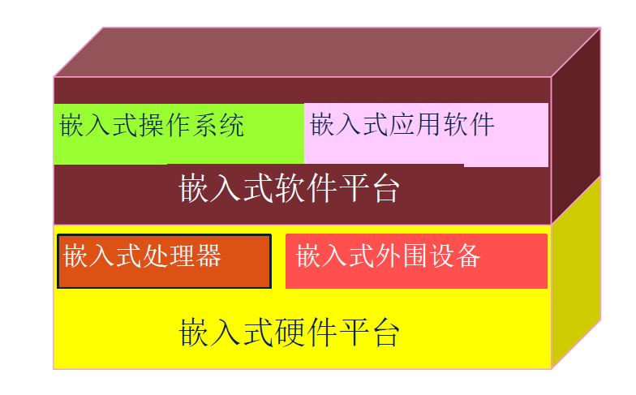
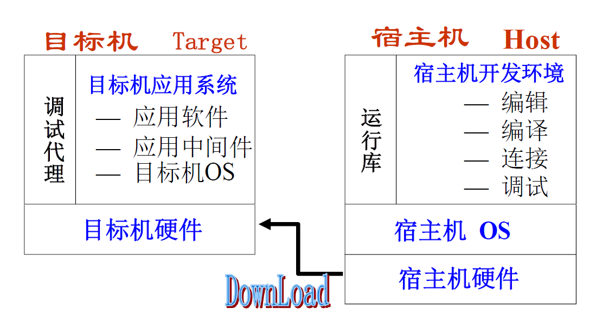
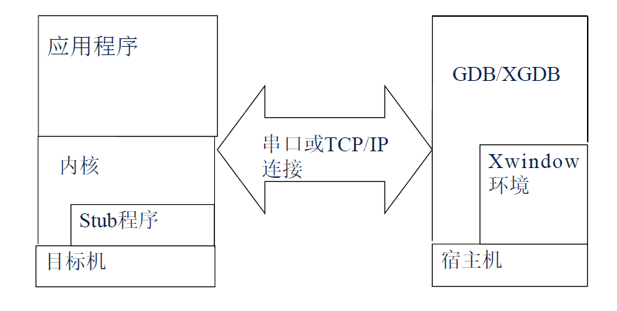
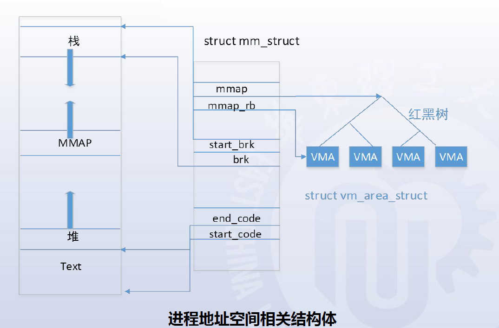
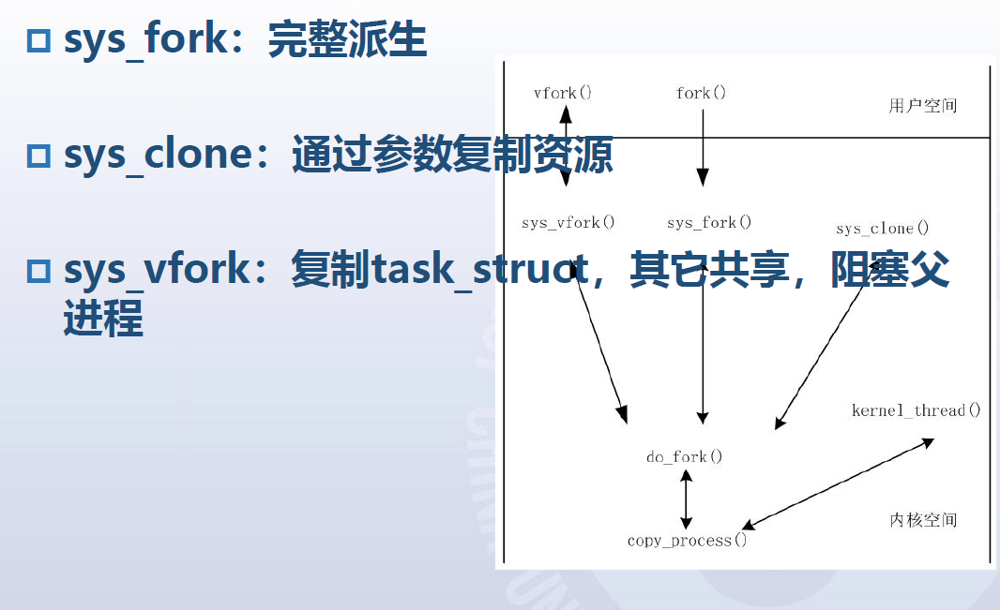
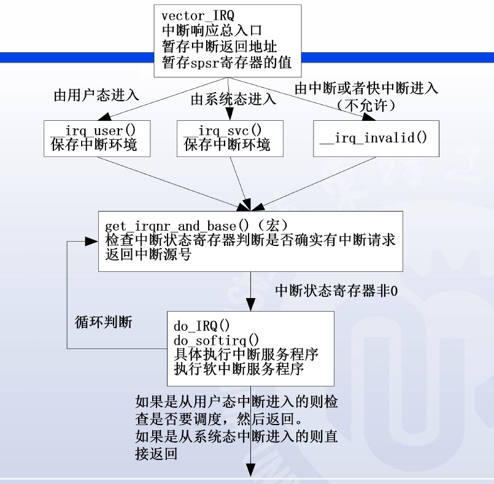
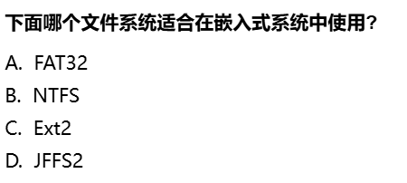
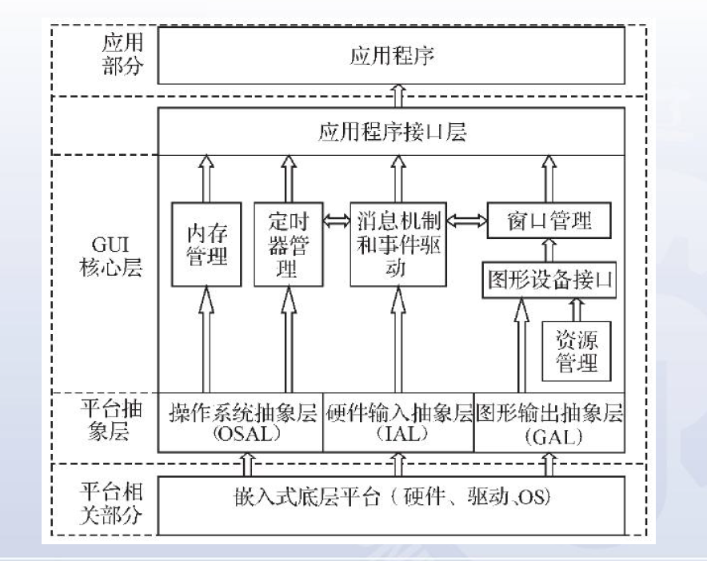
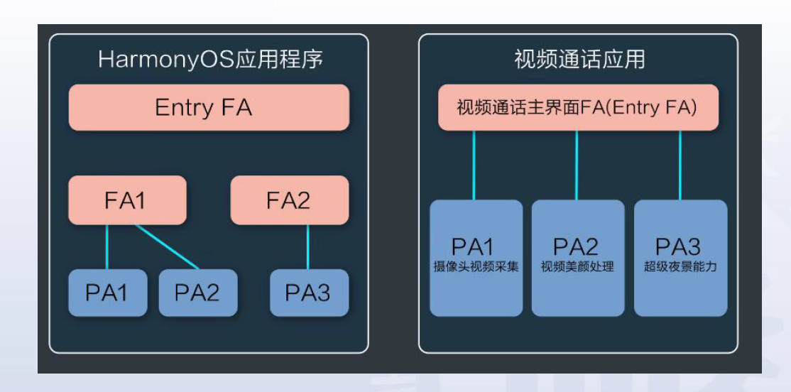

嵌入式系统原理与设计
嵌入式系统原理与设计复习嵌入式系统概述ARM处理器和架构嵌入式Linux操作系统嵌入式软件编程开发环境和调试技术Boot Loader技术ARM-Linux 内核文件系统设备驱动字符设备和驱动程序设计块设备驱动和驱动程序设计网络设备和驱动程序设计嵌入式系统应用作业作业三实验实验一实验二题目说明实验三实验五实验四实验六实验七
复习
本复习以老师的复习pdf(2024)为依据
嵌入式系统概述
1. 嵌入式系统定义
嵌入式系统是指操作系统和功能软件集成于计算机硬件系统之中。
更为普遍的定义:
嵌入式系统是以应用为中心，以计算机技术为基础，采用可剪裁软硬件，适用于对功能、可靠性、成本、体积、功耗等有严格要求的专用计算机系统。
2. 嵌入式系统组成

硬件核心： 微处理器
外围设备：时钟模块、电源模块、输入输出设备、存储设备、通信模块
3. 嵌入式系统与通用性计算机系统的区别
嵌入式系统通常是面向特定应用的
嵌入式系统是将先进的计算机技术、半导体技术和电子技术与各个行业的具体应用相结合后的产物(技术密集、高度分散、不断创新)
嵌入式的软硬件都必须高效率设计，量体裁衣、去除冗杂(专用性)
本身不具备自主开发能力(需要开发工具以及环境)
升级换代和具体产品同步进行(与具体应用有机结合)
软件固化(软件一般固化在存储器芯片或单片机本身, 不是
磁盘)
ARM处理器和架构
1.冯诺依曼结构与哈佛结构的区别
冯诺依曼结构（普林斯顿结构）：在冯诺依曼结构中，数据和指令共享同一存储器空间，因此指令和数据使用相同的总线传输。这种结构的优点是简单且成本较低，但可能会导致数据与指令之间的竞争和瓶颈。指令地址与数据地址统一编码。
哈佛结构：在哈佛结构中，数据存储器和指令存储器是分开的，各自有独立的总线传输数据。这种结构可以提高性能，因为指令和数据可以同时访问，避免了竞争和瓶颈。然而，哈佛结构通常需要更多的硬件资源和成本。四总线制提高吞吐率(程序的地址总线、数据总线，数据的地址总线、数据总线)
2.关键寄存器
ARM处理器的三个关键寄存器
CPSR: 当前程序状态寄存器，用于存储当前程序的状态信息，包括 条件码、中断屏蔽位、执行状态等。通过CPSR可以控制程序的执行和状态转换。SPSR:保存程序状态寄存器，用于存储在异常处理过程中保存的程序 状态。当处理器发生异常时，当前程序状态会被保存到SPSR中，以便在异常处理完成后能够恢复到之前的状态PC:程序计数器，用于存储当前正在执行的指令的地址。PC指向下一条要执行的指令的 地址，控制程序的执行流程。
3. 指令集，微架构，芯片产品的关系
指令集: 指令集架构(ISA)的缩写，计算机系统中硬件和软件之间交互(指令)的规范标准，定义指令的格式、功能
指令集规范记录于手册(Manual)中
微架构: 就是将指令集手册定义的功能实例化，然后通过工程开发，变成源代码
芯片产品: 将版图提交给台积电/中芯国际等企业流片，然后由长电等企业完成封装，获得芯片
ISA定义了软件与硬件之间的接口，微架构实现了ISA中定义的指令集，而芯片产品则是基于特定ISA和微架构设计的实际硬件产品 。
4. RISC-V架构相对于X86/ARM的优势
指令更精巧
模块化，可根据需求自由组合，灵活搭配，支持自定义指令
高性能
开放免费
缺点: 生态不足，碎片化，专利问题
5. 嵌入式处理器常见分类
EMPU, MCU, EDSP, SoC
点击查看更多细节(了解)
EMPU： 嵌入式微处理器 (Embedded Microprocessor Unit) MCU: 嵌入式微控制器 (Microcontroller Unit) EDSP: 嵌入式DSP处理器 (Embedded Digital Signal Processor) SoC: 嵌入式片上系统 (System On Chip)EMPU常见的有: MIPS, ARM系列, PowerPC, SH处理器
区别
ARMv7和ARM7（以下是个人总结，ppt没有答案，注意甄别）
ARM7系列是处理器版本型号，而ARMv7是ARM架构版本号，两者没有本质关联，或者说，ARM7用的也许不是ARMv7架构不知道这道题目的意义在哪
6. 基于RISC架构的ARM处理器的特点
体积小，低功耗，低成本，高性能
支持Thumb(16 位)/ARM(32位)双指令集，能很好兼容8位/16位器件
大量使用寄存器，指令执行速度快
大多数数据操作都在寄存器中完成
寻址方式灵活简单，执行效率高
采用固定长度的指令格式
7. ARM微处理器-Cortex系列
三个系列： Cortex-A, Cortex-R 和 Cortex-M
Cortex-A: 面向高性能应用，13级的流水线，支持1-4个核Cortex-R: 面向高实时性要求的应用，通常应用于专用集成电路(ASIC)，8级流水线Cortex-M: 全球微控制器的标准，面向对能耗和价格有较高要求的用户，低延迟的3级流水线
8. ARM指令集
指令集特征
ARM指令集属于加载/存储型指令
指令的操作数都储存在寄存器中，处理结果直接放回到目的寄存器中
指令集的分类(复习ppt没有要求)
- 跳转指令(如 B, BL)
- 数据处理指令(如 MOV, ADD)
- 存储器访问指令(如 LDR, STR)
- 协处理器指令(如 CDP, LDC, STC)
- 杂项指令(如 BKPR【端点指令】)
- 饱和算术指令(如 QADD)
指令基本组成部分
<opcode>{<cond>}{S} <Rd>,<Rn> {,<shift_op2>}< >内的项目必选，{ }内的项目可选
| 解释 | |
|---|---|
opcode | 操作码(指令助记符) |
cond | 条件码，描述指令执行的条件 |
S | 若加上“S”，则在指令完毕后会自动更新CPSR中条件码标志位的值 |
Rd | ARM指令的目标操作数 (总是一个寄存器) |
Rn | 存放第1操作数的寄存器 |
shift_op2 | 第2操作数，灵活，可以是寄存器，立即数，而且能是使用经过位移运算的寄存器和立即数 |
ARM指令和Thumb指令的区别
ARM指令集几乎每条指令（除了某些v5T指令）都可以是条件执行的，Thumb指令集除了B指令都是无条件执行的许多
Thumb指令数据处理指令采用2地址格式（目的寄存器和源寄存器相同），而大多数ARM数据处理指令采用3地址格式ARM指令在32位的存储下性能较高，而Thumb指令具有较高的指令密度，可以有效降低存储器功耗，在16位的存储器下具有较高的性能
寻址方式
立即寻址
1ADD R1, R1, #0x1; ‘#’加数字表示立即数寄存器寻址
x1ADD R1, R1, R223MOV R1, R0; 也是寄存器寻址的一种，将R0寄存器的数据赋给R1寄存器偏移寻址
xxxxxxxxxx31ADD R1, R1, R2, ROR #0X2; R2循环右移2位后与R1相加，结果放入R123MOV R1, R0, LSL R2; RO逻辑左移R2位后放入R1寄存器间接寻址
xxxxxxxxxx31STR R1, [R2]; 将R1的值存入以R2内容为地址的存储器中23SWP R1，R1, [R2]基址变址寻址
xxxxxxxxxx51; ppt 以及课本几乎没有提及，大概率不重点2; 就是寄存器间接寻址加上个偏移量34; 以下自己随便给个例子5STR R1, [R2, #0x2]多寄存器寻址
xxxxxxxxxx31; 在一条指令中完成多个寄存器数据的传送23LDMIA RO, {R1, R2, R3, R4, R5}堆栈寻址
xxxxxxxxxx31; 大概率不考，就是一个数据结构存放要寻址的寄存器，而指针始终指向栈顶23STMFD SP!, {R1 - R7, LR}； 将R1-R7,LR存放到堆栈中，这条指令一般用来保护现场相对寻址
xxxxxxxxxx61; 寄存器变址寻址的一个特例23BL Label4...5Label:6...
小结
以上是复习ppt给出要复习的内容，基本不涉及指令的内容，不知道是不是只是ppt没写出来而已，但想来这门课是嵌入式，不是计组，所以还真可能不考那么多的内容。
嵌入式Linux操作系统
操作系统作用
系统资源管理
硬件虚拟化
提供资源
常见嵌入式OS
嵌入式Linux、Windows CE、Symbian、VxWorks(嵌入式系统领域中市场占有率最高)、QNX、Palm等
鸿蒙
考试可能问鸿蒙的特点，考试忘了就胡扯吧。。。
卡片化的前端管理，物联网，。。。。
统一OS，弹性部署
硬件互助，资源共享
一次开发，多端部署
嵌入式Linux特点
Linux组成结构（4部分）
内核
Linux内核组成结构（5部分）
进程调度程序（SCHED）负责控制进程访CPU
保证进程能够公平地访问 CPU，同时保证内核可以准时执行一些必需的硬件操作
内存管理程序（MM）使多个进程可以安全地共享机器的主存系统，并支持虚拟内存
虚拟文件系统（VFS）通过提供一个所有设备的公共文件接口，VFS 抽象了不同硬件设备的细节。此外，VFS 支持与其他操作系统兼容的不同的文件系统格式
网络接口（NET）提供对许多建网标准和网络硬件的访问
进程间通信（IPC）子系统为进程与进程之间的通信提供了一些机制

Linux内核的命名机制：
:num.num.num
:主版本号.此版本号.修订版本号Shell
文件系统
嵌入式设备往往选用
ROM、Flash Memory等作为主要存储设备Flash Memory是Non-Volatile（断电数据也能保存）内存的一种，具有EEPRROM（电擦除）的特点。主要有两种非易失闪存技术：
NAND和NORNAND: 单元排列串行，以块和页为单位进行读写，顺序读写，随机读写慢NOR: 单元排列并行，按字节进行读写，随机读写快，可以片内执行应用程序
特点（了解）
广泛的硬件支持
内核高效稳定
开放源码，软件丰富
优秀的开发工具
以
gcc做编译器，以gdb,kgdb,xgdb调试
完善的网络通信和文件管理机制
嵌入式Linux基础知识要点
#: root用户， $: 普通用户
command [-option] {parameters...}shell常见命令、gcc编译命令、Makefile的编译 见实验一这里列一些实验一没有的命令:
mv: 移动文件ln: 创建链接(类似于Windows的快捷方式.lnk文件)分为
符号链接和硬链接，后者与原文件具有相同的inode(文件索引节点)符号链接像一个指针，指向另一个文件的位置，而硬链接则是与原始文件共享相同内容的另一个文件名。
软链接:
ln a_b_c_d_305.file 305， 硬链接:ln -s a_b_c_d_305.file 305mount: 挂载文件系统，将一个文件系统连接到另一个文件系统的一个点上的过程，这样用户和程序就可以访问挂载的文件系统中的文件了。将一个文件系统连接到另一个文件系统的一个点上的过程，这样用户和程序就可以访问挂载的文件系统中的文件了。详见实验四指导。chown: 改变文件或目录的所有者（owner）和所属组（group）sudo chown john:users example.txtchmod: 改变文件或目录的权限 【面试试卷必出(别问我怎么知道)】u: 所有者，g: 所属组，o: 其他用户，a: 所有用户r: 读(4)，w: 写(2)，x: 执行(1)chmod go+rx example.txtchmod 744 example.txt、chmod u=rwx,g=r,o=r example.txt分别表示u(4 + 2 + 1)、g(4)、o(4)三段式(
ls -l example.txt):-rwxr--r--，其中开头的-表示这是一个普通文件，d表示目录文件Linux编程
具体操作见实验一
vim/vi的三种模式：普通模式、插入模式、命令行模式
GCC编译： 预处理、编译、汇编、链接
嵌入式软件编程
Makefile: 依赖关系 + 规则
什么是
Make、Makefilemake是一种常用的编译工具，方便管理软件编译的内容、方式和时机，可以自动根据文件修改时间判断源文件哪些部分有更新，通过解释Makefile文件内的规则并执行响应的命令，重新编译链接这些更新过的文件。[省流: 方便编译，缩短不必要的编译时间]Makefile：一个用于自动化构建过程的文件，包含一系列规则，告诉make工具如何生成目标文件Makefile的构成：xxxxxxxxxx31TARGET... : PREREQUISITES... # 规则的目标: 规则的依赖23COMMAND # 规则的命令可以在
Makefile中定义变量，利用$访问此外，
@表示当前目标文件，<规则的第一个依赖文件名，^规则的所有依赖文件列表其余的感觉也不会考。。。平常也用不到
xxxxxxxxxx241# 编译文件 hello.c, 包含file1.h, file2.h，其中file1.h, file2.h声明的函数在file1.c, file2.c定义2CC=gcc # 指明编译器3CFLAGS= # 参数，为空，此行可以不写，虽然不知道老师为什么喜欢写，比如可以写 CFLAGS=-Wall -o345OBJS=hello.o file1.o file2.o67all: hello # 最终目标89hello: $(OBJS) # 依赖关系10$(CC) $(CFLAGS) $(OBJS) -o hello # 这里的$(OBJS)就可以用$^代替， hello就可以用$@代替(目标)1112hello.o: hello.c file1.h file2.h13$(CC) $(CFLAGS) -c hello.c -o hello.o # 这里的hello.o也课程用$@代替，目标: 依赖1415file1.o: file1.c file1.h16$(CC) -c file1.c -o $@1718file2.o: file2.c file2.h19$(CC) -c file2.c -o $@2021clean:22rm -f *.o #这一步开心就好，想要怎么清理就怎么清理 rm -f $(OBJS) hello2324除了显性规则，还有隐含规则和模式规则
模式规则：
%.o: %.c，详见实验（短时间内记不住的那种）隐含规则：类似这种
gcc hello.c -o hello一般hello.o会找到hello.c编译的目标可重入问题
可重入函数可以有多个任务并发使用，而不必担心数据出错。
将全局变量或静态变量改为局部变量
采用信号量进行临界资源保护
禁止中断
C语言和汇编语言编程
我不信他考汇编语言。。。
1. 汇编程序调用C程序
汇编语言使用
IMPORT伪指令声明将要调用的C语言子程序然后通过
BL指令调用C函数2.C程序调用汇编程序
嵌入式汇编
汇编程序中使用
EXPOET伪指令声明子程序将在其他文件中调用C程序中使用
extern声明要调用的汇编子程序为外部函数内联汇编
在C程序中使用
__asm__(输出:输入:修改)语句实现优点:
可以实现一些高级语言不能实现或者不容易实现的功能
对于有时间紧迫要求的功能也可以通过C语言中内嵌汇编语句来实现
xxxxxxxxxx11123int main(void) {4int result, value;5value = 1;6printf("old value is %x\n", value);7__asm("mov %0, %1, ror #1": "=r"(result): "r"(value));8printf("new result is %x\n", result);910return 1;11}
开发环境和调试技术
嵌入式软件开发的主要步骤
选择硬件开发平台
建立嵌入式Linux开发环境 [本章的内容]
系统软件开发
建立引导装载程序Bootloader
ARM-Linux内核
嵌入式文件系统
嵌入式设备驱动
嵌入式GUI
嵌入式应用开发——Android / 鸿蒙应用开发
嵌入式系统开发模式
硬件环境
通信接口和设备
软件环境
宿主机/目标机交叉开发模式
原因
嵌入式系统资源受限，直接在嵌入式系统硬件平台编写软件较为困难。
步骤
在通用计算机上编写软件
通过本地编译或者交叉编译生成目标平台可以运行的二进制代码格式
下载到目标平台运行

宿主机环境的建立
交叉编译环境
包括交叉编译，交叉链接，交叉调试
安装交叉编译工具机
ToolChain（标准库、编译器、链接器、汇编器、调试器）什么是交叉编译
在一种平台上编译出能在另一种平台（体系结构不同）上运行的程序
建立宿主机-目标机之间的通信连接
JTAG芯片级接口，第一个运行软件需要通过
JTAG口传递目标板的
JTAG接口连接开发机的并口/USB
实现串口通讯
驱动实现最简单
传输速度慢，距离短，不适合大数据量、长距离数据传输
需要在宿主机、目标机两端均提供驱动
常用于宿主机-目标机的字符流通讯
网络通讯
驱动实现相对复杂，一般采用精简的网络通讯协议，如
TFTP进行通讯常用语宿主机-目标机的大数据量数据传输，可以作为串口通讯的补充
需要在宿主机、目标机两端均提供驱动
宿主机端实现服务器，目标机端提供客户端
交叉编译
交叉编译就是在一个架构下编译另一个架构的目标文件
采用何种交叉编译器产生何种格式的目标文件还要取决于目标机的操作系统
TFTP协议
TFTP服务的全称是Trivial File Transfer Protocol
TFTP可以看成一个简化了的FTP
特点：
TFTP承载在UDP上
最普遍使用的是第二版TFTP使用UDP的67端口
TFTP在安装时一定要设立一个单独的目录作为TFTP服务的根目录，以减少安全隐患
利用TFTP下载Linux映像
Linux下的调试——
gdb调试运行程序，可以给程序加上所需的任何调试条件
在给定的条件下让程序停止
检查程序停止时的运行状态
通过改变一些数据，可以更快地改正程序的错误
GDB用法？
在编译时，必须要把调试信息加到可执行文件中
使用编译器（
cc/gcc/g++）的 -g 参数
具体可以查看实验五
搭建嵌入式系统的远程调试环境
搭建原理
Stub方案Stub：为解决调试器与被调试程序如何通信、被调试程序产生异常如何即时通知调试器、调试器如何控制和访问被调试程序等问题，需要在目标操作系统和宿主机调试器内分别添加一些功能模块，然后二者互通信息调试，这种方案称为Stub(插桩)
远程调试原理
用
ROM Monitor调试目标板程序用
kgdb调试系统内核用
gdbserver调试用户空间应用程序

Boot Loader技术
PC机与嵌入式系统的启动过程及其差别？
PC机： + 加电自检（
POST) +BIOS/UEFI初始化 + 加载引导程序 + 加载操作系统嵌入式：
硬件初始化
加载引导程序
内核启动
加载根文件系统
启动用户程序
差别
嵌入式系统没有
POST，用没有BIOS，启动过程更加简单和定制化，可以是直接从固话的存储器中（如闪存）加载引导程序，更快速和更高效率；PC系统启动往往会做一系列检查
什么是Boot Loader?
在操作系统内核运行之前运行的一段小程序（引导加载程序）
常见的Boot Loader
U-Boot、vivi、Redboot
主要工作
初始化硬件设备和建立内存空间的映射图
将系统的软硬件环境带到一个合适的状态
为最终调用操作系统内核准备好正确的环境
相关概念
Boot Loader的操作模式
启动加载模式
下载模式
如何使用串口终端
如果问的是如何使用串口终端连接，这个问题似乎没有意义。。。。使用传输协议，往下看
xmodem等如果问的下载模式如何通过连接下载文件：
首先被Boot Loader保存到目标机的RAM中，然后再被Boot Loader写到目标机的Flash类固态设备中。
Boot Loader与主机之间的通信设备及协议
最常见的是串口，协议
xmodem/ymodem/zmodem以太网，协议
TFTP
从操作系统的角度看，Boot Loader的总目标就是正确的调用内核来执行
Boot Loader的典型结构框架
大多数Boot Loader都分为阶段1和阶段2两个部分
阶段1的任务
实现依赖于CPU体系结构的代码
阶段2的任务
实现一些复杂的任务（C语言）
以下阶段内容了解即可
阶段1
硬件设备初始化
为加载阶段2准备RAM空间
拷贝阶段2到RAM中
设置堆栈指针SP
跳转到阶段2的C入口点
xxxxxxxxxx11阶段2初始化本阶段要使用到的硬件设备
检测系统的内存映射
加载内核映像和根文件系统系统映像
设置内核的启动参数
调用内核
Boot Loader的使用
烧写Boot Loader
烧写方法
JTAG、串口、网络等等，跟上方的宿主机和目标机的通信方式基本一致，基本都可以这里我不明白老师说的第一个程序只能通过JTAG是什么意思
Boot Loader加载或烧写内核和文件系统
Boot Loader的操作模式
Boot Loader编程：trampoline
当
main函数执行完成后，执行trampoline，然后trampoline小程序作为main的外部包裹，所以main函数执行完成后，就继续执行main函数
Boot Loader如何检测内存（RAM）可读写
这个问题课件没有，复习ppt也没有答案。有一个办法，就是
读写测试往指定内存地址读写操作，首先写入一个特定的数据模式，然后立即读回并比较，判断两个数据是否一致。
范围测试Boot Loader与内核的通信
传递启动参数
设置内核运行环境
加载内核模块
传递控制权
ARM-Linux 内核
内存管理
内存管理内容
包含地址映射、内存空间的分配，有时还包括地址访问的限制
如果将I/O也放在内存地址空间中，则还要包含I/O地址的映射
另外，像代码段、数据段、堆栈段空间的分配等等都属于内存管理
影响内存管理的两个方面
Linux操作系统的内存管理 [ARM-Linux：基于ARM处理器的Linux内核]
MMU（内存管理单元）(ARM体系)，体系对内存管理的特殊性
MMU
作用
地址映射
对地址访问进行保护和限制
地址映射方式种类
段映射（
Section: 1MB)[单层]页面映射 （
Page， 大的64KB，小的4KB，微小的1KB）
MMU可以做在芯片中，也可以作为协处理器
嵌入式Linux内核
虚拟内存
内存映射模型

记不住。。。
mm_struct最高层次，vm_area_struct较高层次
进程管理和调度
进程：又称作任务，是一个动态的执行过程，是处于执行期的程序，是系统资源分配的最小单位。
Linux中，每个进程由一个
task_struct的数据结构来表示Linux进程的创建
三个系统调用
sys_forksys_vforksys_clone
三个系统调用的区别：

Linux进程的执行
fork创建一个新的进程会产生一个新的PID，exec启动一个新程序，替换原有的进程，所以这个新的被执行exec执行的程序的PID不会改变，和调用exec函数的进程一样
通常在使用 fork() 后，子进程会调用 exec() 来执行新的程序 。
进程的销毁——三个事件驱动
正常的进程结束
信号终止
exit函数的调用
本质都要借助内核函数
do_exit的调用来结束进程
进程调度依据
功能：
xxxxxxxxxx21+ 清理当前运行中的进程2+ 选择下一个投入运行的进程设置新进程的运行环境
执行进程上下文切换
下面四个在
task_struct结构中Policy
调度策略，用来区分实时进程和普通进程
实时进程会优先于普通进程执行
Priority
进程（包括实时和普通）的静态优先级
Counter
进程剩余的时间片，起始值就是priority的值
可以看作是进程的动态优先级
rt_priority
实时进程特有的，用于实现进程间的选择
Linux中，用函数
googness()综合以上四项并结合其他因素，给每个处于可运行状态的进程赋予一个权值
Linux模块机制
必要性
弥补Linux可拓展性以及可维护性差的缺点
模块的代码结构
xxxxxxxxxx271//头文件23456//模块宏声明，不是每个选项都必须7MODULE_LICENSE("GPL");8MODULE_DESCRIPTION("TEST");9MODULE_AUTHOR("JiGuang");1011//初始化函数12static int __init mod_init_func(void) // __init不可省略, mod_init_func名字无所谓13{14printk(KERN_EMERG "Hello\n");15return 0;16}1718//退出函数19static void __exit mod_exit_func(void)20{21printk(KERN_EMERG "See you \n");22}2324//入口出口函数设置25module_init(mod_init_func);26module_exit(mod_exit_func);27
与Linux模块相关的命令
lsmod把现在kernel中已经安装的modules列出来insmod把某个module安装到kernel中rmmod把某个没在用的module从kernel中卸载depmod制造module dependency file，以告诉将来的insmod要去哪儿找modules来安装
中断管理
一个流程
我不信他让我们描述

三个环节
中断响应
中断处理
中断返回
GPIO
是一个通用的可编程I/0接口，每一位都可在程序的控制下设置用于输入或者输出；用于输入时，可引发中断请求
系统调用
实现方式
通过经过封装的C库(
libc)或者直接调用x86：通过自陷指令INT 0x80实现ARM：通过自陷指令SWI实现
保存当前运行的信息 根据系统调用号查找相应的函数去执行 恢复原先保存的运行信息返回
启动和初始化
过程
使用Boot Loader`将内核映像载入
内核数据结构初始化
外设初始化
后两者属于初始化过程，特别特别特别特别特别多步骤，应该不考
/etc/inittabinit程序通过读取该文件作为其行为指针，inittab是以行为为单位的描述性(非执行性)文本，每一个指令行都具有一下格式id:runlevel:action:process入口标识符:运行级别:动作代号:具体的执行程序
嵌入式Linux内核编译
Linux内核配置区别：
make configmake menuconfigmake xconfig
Linux内核编译区别
**make**make zImagemake bzImage
详见实验三
懒得去看实验请点此

文件系统
嵌入式文件系统知识点
控制设备驱动的途径有哪些
通过设备驱动的接口
通过文件管理器接口
这个问题看起来很奇怪，事实上也是很奇怪。但是，Linux中，请时刻记住设备属于文件。所以这个问题出现在这里也能理解。
Linux文件系统组织结构
通过树结构（
单根倒置树结构），如/bin/sbin/etc/dev/proc/var/temp/usr/homeLinux文件系统与Windows文件系统区别
Linux Windows 组织结构 文件树 /etc/home 以驱动器的盘符为基础 C:\Windows\Users 分区 分区属于目录结构 目录结构属于分区 开源 开源 商业 设备 设备属于文件 将硬盘等视为设备 权限 每个文件 rwx管理员（面向对象） 进程 不会锁定对文件的独占 会锁定对文件的独占 至于文件系统格式并不是绝对的，因为操作系统可以使用多个文件系统。
一般
Linux是EXT系列，Windows是NTFS，后者区分大小写
常用文件系统
通用文件系统
ext2
能否做嵌入式文件系统？
对于这道问题，ext2文件具有轻量级、高性能和稳定性等特点，适用于嵌入式设备中。
但是，这可能是相对的。。。下面有道题：

答案
D
常用嵌入式文件系统
NAND Flash
NOR Flash
RAM
Network
根文件系统
什么是根文件系统：
系统挂载的第一个文件系统，本质上就是一种目录结构，需要包括Linux启动时所必需的目录和关键性文件。
根文件系统：如何建立根文件系统？
详见实验四
粗浅的流程
准备好工具后，创建根文件系统目录，编译busyBox，然后安装（make install）,添加一些链接库到lib目录，最后添加一些必要的文件，生成镜像。
cramfs嵌入式根文件系统构造
设备驱动
设备驱动程序，这里简写成设备驱动。
基本概念
作用
设备初始化和释放
传输数据（内核与硬件之间，双向）
读取应用程序传送给设备文件的数据，回送应用程序请求的数据
检测和处理设备出现的错误
设备的分类
字符设备：无需缓冲直接读写
块设备：通过
buffer或cache进行读写，支持随机访问网络设备：通过
BSD套接口访问
设备文件
Linux抽象了对硬件设备的访问，可作为普通文件一样访问，使用和操作文件相同的、标准的系统调用接口来完成打开、关闭、读写和I/O控制操作
设备号
每个设备文件都对应两个设备号
主设备号，标识设备的种类，使用的驱动程序
次设备号，标识使用同一设备驱动程序的不同硬件设备
sudo mknod /dev/lp0 c 6 0：该命令用来创建设备节点，
/dev/lp0为要创建的设备节点和名称，c表示创建，6、0分别是主、次设备号设备节点和设备文件的区别（上课提过，复习PPT没有提及，可能不考）
用来表示系统中的硬件设备或虚拟设备的特殊文件就叫做设备文件，一般放在/dev目录下 而设备节点是设备文件的一种表现形式。也就是说，可以用设备文件的路径来表示设备文件。 在我看来，这种关系就好比有一个文件a,现在这个文件丢给你，这就是一个实际的文件来表示你之前说的文件（设备节点），但也可以直接告诉你文件的路径来表示这个文件，而文件a(好比设备文件)是真实存在的，而丢给你的文件也是真实存在的。
sysfs文件系统设备拓扑结构的文件系统表示，为了方便调试，将设备结构树导出为一个文件系统，即
sysfs文件系统，挂载在/sys目录下
驱动程序的编写及加载
编写驱动程序
程序结构
驱动程序的注册与注销
设备的打开与释放
设备的读写操作
设备的控制操作
设备的中断和轮询处理
下载到目标板
下载方式见目标板与宿主机的通信方式
挂载目标模块
挂载模块方式见第七章。
驱动程序编写完本质也是一个模块，需要挂载。
同步机制
内核同步
Linux内核的同步机制
同步锁
自旋锁
如果获取自旋锁时锁已经有保持者，那么获取锁这个操作将自旋，知道该自旋锁的保持者释放了锁
读写锁
读者/写者形式的锁允许任意数目的读者同时进入临界区，但写者必须是排他的。RCU锁
改进的读写锁，相比下允许多个读者和多个写者在同一时刻访问被保护数据。
Seqlock实现原理类似
c++的shared_ptr，利用计数器，能够实现快速地、无锁地存取一个共享资源。
信号量
原子操作
最小的执行单位。指该操作在执行完毕前绝对不会被任何其他任务或时间打断。
完成事件
实现简单睡眠直到其他进程完成某些处理过程，不会引起资源竞争。
线程之间的通信和协调，而同步锁用于保护共享资源的访问
设备操作——同步 or 异步
DMA（Direct Memory Access）
直接内存存取解决快速数据访问
DMA控制器可以不需要处理器的干预，在设备和系统内存高速传输数据
字符设备和驱动程序设计
字符型设备驱动
数据结构
struct file_operations描述一个文件操作所需要的所有函数（以函数指针的形式给出）
struct file每次打开的文件，在内核中都用
file结构体表示，其中有一个成员f_op，指向file_operationsLinux所有的设备都是文件，在内核中使用
file结构体来表示一个打开的文件。struct inode内核文件系统索引节点对象，包含了内核在操作文件或目录时所需要的全部信息
内核中用
inode表示文件，同个文件可能会有多个打开文件，因此一个[存疑]inode结构体可能对应多个file结构体对于设备文件，
inode的dev_t i_rdev表示实际的设备号，struct cdev *i_cdev指向cdev结构的指针，字符设备在内核中用cdev表示
串行总线接口
SPI：高速、全双工、同步的串行总线，有两种模式：主模式、从模式I²C：简单，高效I²C驱动架构有三个组成部分：I²C核心
I²C总线驱动
I²C设备驱动
块设备驱动和驱动程序设计
数据结构
gendisk：表示是一个独立磁盘设备或者一个分区，记录磁盘等的设备号等等信息request_queue：每一个块设备都有一个请求队列，组织和跟踪该设备的所有I/O请求，并提供插入接口给I/O调度器使用request
主要工作
初始化
注册块设备及块设备驱动程序
分配、初始化、绑定请求队列
分配、初始化
gendisk，为相应的成员赋值并添加gendisk其他初始化工作，比如申请缓冲区，设置硬件尺寸等等
请求处理
通过
请求函数完成块设备不像字符设备操作，没有
read和write，对块设备的读写是通过请求函数完成的。请求函数出块设备驱动的核心。
网络设备和驱动程序设计
数据结构
net_device：记录设备基本信息sk_buffer：处理网络数据包
主要工作
初始化
主要对
net_device进行初始化，由net_device的init函数指针指向的函数完成，当加载网络驱动模块时该函数就会被调用。打开接口
在数据包放送前，必须打开接口并初始化。
由
net_device的open函数指针指向的函数完成。
嵌入式系统应用
嵌入式GUI
基本概念
嵌入式系统的图形用户界面。
分类
与操作系统结合的GUI：如IOS
外挂GUI：如
Android、Qt/E、MiniGUI、Microwindows简单GUI：可重用性差
体系结构——分层设计

三层
抽象层：隐藏硬件的复杂性，为上层提供统一的接口
核心层：包含了渲染引擎、事件处理、窗口管理器等核心功能
应用程序接口层
Android应用程序构成
一个Android应用程序构成
活动（Activity）：Android应用程序最基本的组成单位，一个Activity对象通常就表示一个单独的屏幕。用户唯一看得到的组件
Activity的生命周期用户浏览、退出和返回到应用时，应用中的
Activity实例会在其生命周期的不同状态间转换。六个核心回调：
onCreate()、onStart()、onResume()、onPause()、onStop()、onDestroy()
意图（Intent）：一个消息传递对象，使用它请求其他组件执行操作。
服务（Service）：一个没有用户界面的应用组件，在后台执行长时间运行的操作
内容提供器（Content Provider）：管理一组共享的应用数据，在文件系统、数据库或网络上
鸿蒙应用开发
开发语言：
ArkTSAbility
应用所具备能力的抽象，一个应用可以有多种能力
FA：UI界面
PA：
Ability调用的各种服务

作业
作业三
简述 Linux 操作系统内存管理的功能。（
运行比内存还要大的程序。
先加载部分程序运行，缩短了程启动的时间。
可以使多个程序同时驻留在内存中提高CPU利用率。
可以运行重定位程序。（程序可以放于内存中的任何一处，且可以在执行程序中移动）
写机器无关的代码
减轻程序员分配和管理内存资源的负担
可以进行内存共享
提供内存保护
解释 MMU （
MMU: 内存管理单元，提供一组寄存器，并依靠这组寄存器来实现地址映射和访问保护，可以做在芯片中，也可以作为协处理器。C程序如何调用汇编程序。(
嵌入式汇编或内联汇编调用。宿主机和目标机的连接方式有几种，各种连接方式的作用。 (
串口：可以当做终端使用，利用串口给目标板发送命令，同时可接受目标板返回的信息并显示，可以传送文件，实现简单。以太网：使用简单，配置灵活，支持广泛，传输速率块，安全可靠。USB：快速、灵活、易于使用，支持热插拔。JTAG：用于芯片内部测试以及对系统进行仿真，调试。
简述如何进行嵌入式调试（三个层次）(
课本没有，结合PPT进行整理[问了个啥都不知道])嵌入式应用一般采用交叉调试。
宿主机启用调试器
宿主机调试器与目标机调试服务器建立通信通道，向目标系统发送调试信息。
目标机被调试程序若触发异常，调用异常处理程序，转入调试端口通信。
xxxxxxxxxx311. 上电初始化调试22. 系统内核调试33. 应用程序调试
也可能问的这三个：远程调试、内核调试、网络调试。
实验
校外访问: https://172-18-120-29-8080-p.sslvpn.ecust.edu.cn:8118/#/login
对于https端口，加入后缀即可访问 vpn
密码:
123456进入实验后选择任意一个实验，点击实验环境中的登录
实验一
二.2 pdf
新建项目目录project-1，完成如下功能：
1）在该项目中编写hello.c程序，该程序输出“Hello,world！”；
2）通过gcc命令编译该文件，运行该可执行程序。
xxxxxxxxxx51mkdir project-12cd project-13
4vim hello.c5
hello.c文件内容：
xxxxxxxxxx81
3int main() {4 printf("Hello, world!\n");5 6 return 0;7}8
退出编辑模式后，输入:wq 保存文件
使用命令编译运行文件：
xxxxxxxxxx51gcc -c hello.c2gcc hello.o -o hello3
4./hello5
二.3
新建项目目录project-2，完成如下功能：
1）在该项目中编写makefile-hello.c程序；
2）该程序输出“Hello,world for Makefile！”；
3）编写Makefile，通过Makefile编译makefile-hello.c，并运行可执行程序。
使用命令返回到上一层，同样新建目录，并进入该目录
xxxxxxxxxx61cd ..2mkdir project-23cd project-24
5vim makefile-hello.c6
makefile-hello.c:
xxxxxxxxxx81
3int main() {4 printf("Hello, world for Makefile!\n")5 6 return 0;7}8
新建makefile文件
xxxxxxxxxx21vim makefile2
makefile：
命令一定要缩放，不能空格 ಥ_ಥ
xxxxxxxxxx131CC=gcc2CFLAGS=3
4OBJS=hello.o5all: hello6hello: $(OBJS)7 $(CC) $(CFLAGS) $^ -o $@8hello.o: makefile-hello.c9 $(CC) $(CFLAGS) -c $< -o $@10 11clean:12 rm -rf hello*.o13
保存退出
xxxxxxxxxx41make2
3./hello4
二.4
1） 新建项目目录project-3，完成如下功能： 编写C语言文件file1.c、file2.c和相关的头文件；
2）file1.c输出：“This is the first file!”；
3）file2.c输出：“This is the second file!”；
4）编写Makefile，编译该工程，并运行可执行程序，依次输出：
This is the first file!
This is the second file!
同样新建文件夹，创建以下文件
file1.c:
xxxxxxxxxx71
4void showFile1(void) {5 printf("This is the first file!\n");6}7
file1.h:
xxxxxxxxxx21void showFile1(void);2
file2.c:
xxxxxxxxxx71
4void showFile2(void) {5 printf("This is the second file!\n");6}7
file2.h:
xxxxxxxxxx21void showFile2(void);2
main.c:
xxxxxxxxxx51int main() {2 showFile1();3 showFile2();4}5
makefile:
xxxxxxxxxx141CC=gcc2CFLAGS=3
4CFILES=$(wildcard *.c)5OBJS=$(CFILES:%.c=%.o)6all: main7main: $(OBJS)8 $(CC) $(CFLAGS) -o main $(OBJS)9.c.o:10 $(CC) -c $<11 12clean:13 rm -rf *.o14
使用命令编译运行
xxxxxxxxxx41make2
3./main4
二.5
根据各人学号or姓名，为自己新建一个工作目录，并利用pwd命令查看自己的工作目录；将前述工程project-1到project-3打包成back.tar.g
xxxxxxxxxx71mkdir 210131222pwd 210131223
4tar zcvg back.tar.g project-1 project-2 project-35
6mv back.tar.g 210131227
实验二
题目说明
首先，这个实验很多部分不同电脑不一样比如是添加用户时 /etc/shadow, /etc/passwd 这部分账号的id以及密码都是不确定的，不能 直接照抄
其二，第四问 file.c 要求错误代码，这个错误代码要自己写，也不能一样
最后，第8问这个只能说上课讲过，但不知道咋写，实验指导也没有，所以这部分 不能直接抄
实验三
实验五
注意看文字，由于今天课上叫了我，于是在文档中有一些在吐槽，不要抄！！！！
实验四
这次实验没有代码的部分，我也没有编译出一个文件系统，所以都得用自己的话重新写一下步骤，包括思考题。
特别是异同那部分，是没话可说扯出来的，这个绝对要改。
实验六
注意事项：
ip每个虚拟机都不一样，得自己查看
我之前换过虚拟机平台，所以出现的不能通过平台下载文件这个问题我不确定是否是我自己的问题，所以关于power shell这部分的内容最好别抄.
简述主要步骤是我自己总结的，简述代码的作用是AI生成的，记得用AI重新生成一遍
最后的思考题答案是本来就有了的，老师给的，不是我写的，所以不用替换。
实验七
众所周知，选做就是不做。
本实验绝大多数都是问的AI。除了前面两道有做实验之外。